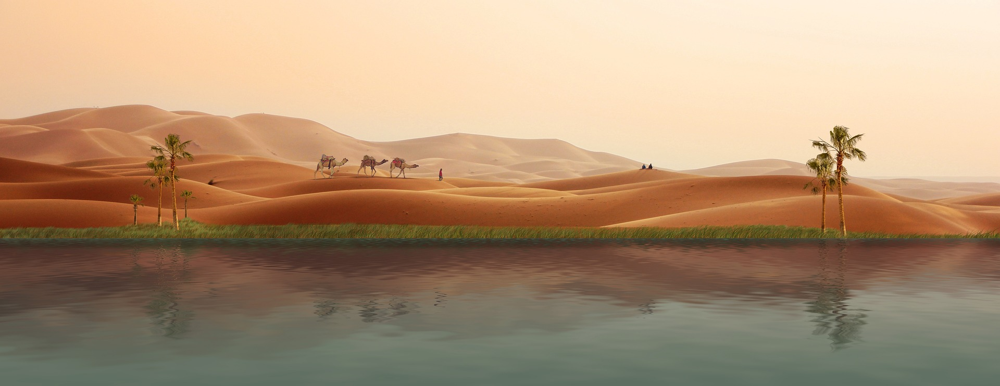

¿Cuál es la función de las palmeras?
Antiguamente (aún hay empresas que hacen muebles) con la madera de los troncos de las palmeras se hacían vigas de madera para construir, puertas, bancos, jardineras, mesas y otro tipo de mobiliario. Hoy en día también para biomasa o compost y un nuevo uso, las suelas de calzado.

¿Qué es un oasis y sus características?
Un oasis es un paraje de un desierto en el cual se pueden encontrar agua y vegetación. Suelen constituir porciones más o menos extensas de terrenos fertilizados por una fuente de agua en medio de los arenales.